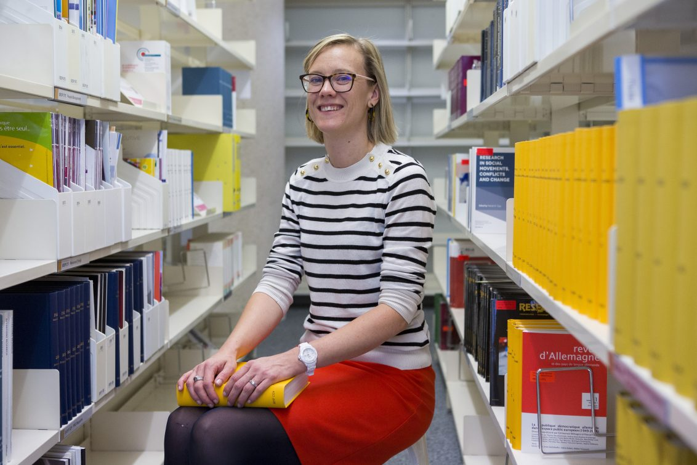

Steering Committee
The steering committee is responsible for the overall coordination of SwissRN activity and strategy.
| Institution | Department | Member | |
|---|---|---|---|
| University of Zurich | Center for Reproducible Science | Prof. Dr. Leonhard Held |  |
| University of Geneva | Geneva University Neurocenter | Evie Vergauwe |  |
| University of Bern | Department of Clinical Research and Veterinary Public Health (DCR-VPH) | Prof. Dr. Hanno Würbel, Veterinary Science |  |
Advisory Board
An external Advisory Board comprising academics from the international research community with expertise related to the goals of the network supports the steering committee regarding strategy and direction.
| Institution | Member | |
|---|---|---|
| University of Bristol | Marcus Munafo | |
| NN | NN | |
| NN | NN |
SwissRN coordinator
| Institution | Contact | |
|---|---|---|
| University of Zurich | Eva Furrer |
Contact
The primary contact point for SwissRN is currently Eva Furrer, please send an email to Eva Furrer for more information.